Pantalla Principal BCP
Que se esta viendo: ruta operativa de BCP con empresas, KPIs, tabs de trabajo y acciones superiores.
Para que sirve: es el punto de entrada para cargar operaciones, atender bandejas, revisar caja y cerrar el dia.
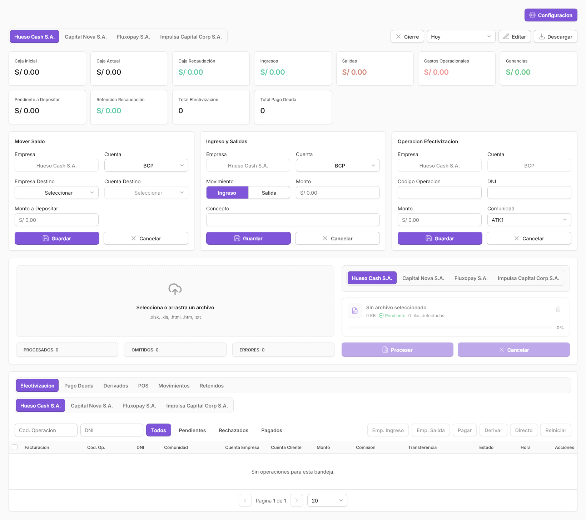
Este manual resume las operaciones principales para trabajar con BCP: seleccionar empresa, registrar movimientos manuales, cargar archivo, atender operaciones, cerrar caja y descargar reportes.
imagenes usando los nombres
1.jpg, 2.jpg, 3.jpg y asi sucesivamente.
| Elemento general | Que hace | Como usarlo |
|---|---|---|
| Tabs de flujo | Separan el trabajo por Efectivizacion, Pago Deuda, Derivados, POS y Movimientos. | Entrar al tab segun la operacion que se quiere atender. |
| Tabs de empresa | Filtran la informacion por empresa/caja disponible en BCP. | Seleccionar una empresa antes de cargar archivo, atender operaciones o cerrar caja. |
| Badges | Muestran la cantidad de operaciones pendientes por tab o empresa. | Usarlos para saber donde hay trabajo sin revisar fila por fila. |
| Filtros rapidos | Reducen la tabla por estado o tipo de movimiento. | Usar Pendientes, Pagados o Todos segun la revision. |
| Checkbox | Permite seleccionar una o varias filas. | Seleccionar filas antes de usar botones masivos como Pagar, Derivar o Reiniciar. |
| Botones rapidos | Aplican una accion a todas las filas seleccionadas. | Verificar seleccion y empresa activa antes de confirmar. |
| Acciones por fila | Abren opciones especificas para una sola operacion. | Usarlas cuando solo se necesita ajustar o consultar un caso puntual. |
| Paginacion | Divide la tabla en paginas y permite cambiar cantidad de filas visibles. | Usar 20, 50 o 100 segun el volumen de trabajo. |
Ingresar a /operaciones/bcp para visualizar la pantalla operativa.
Elegir la empresa con la que se trabajara. La empresa activa queda marcada en morado.
Validar caja inicial, caja actual, ingresos, salidas, gastos, ganancias y pendiente a depositar.
| Elemento | Que muestra | Para que sirve |
|---|---|---|
| Empresa seleccionada | La caja/empresa activa sobre la que se esta trabajando. | Todo filtro, carga, movimiento y cierre se aplicara sobre esta empresa. |
| Caja Inicial | Saldo con el que inicia el ciclo operativo. | Sirve como punto de partida para validar caja. |
| Caja Actual | Saldo disponible despues de ingresos, salidas y gastos confirmados. | Permite saber cuanto saldo queda para operar. |
| Total Recaudado | Total confirmado del periodo. | Sirve para validar cuanto dinero entro realmente. |
| Ingresos | Ingresos confirmados visibles en movimientos, excluyendo efectivizacion y Pago Deuda cuando corresponde. | Se usa para revisar ingresos manuales u otros ingresos operativos. |
| Salidas | Pagos o egresos generados por operaciones. | Ayuda a conciliar dinero enviado. |
| Gastos Operacionales | Comisiones bancarias u otros gastos aplicados. | Permite entender descuentos operativos. |
| Ganancias | Ganancia calculada por operaciones atendidas. | Sirve para revisar utilidad del ciclo. |
Que se esta viendo: ruta operativa de BCP con empresas, KPIs, tabs de trabajo y acciones superiores.
Para que sirve: es el punto de entrada para cargar operaciones, atender bandejas, revisar caja y cerrar el dia.

Que se esta viendo: la empresa activa queda marcada visualmente.
Para que sirve: todo filtro, carga, movimiento y cierre se aplicara sobre esta empresa.
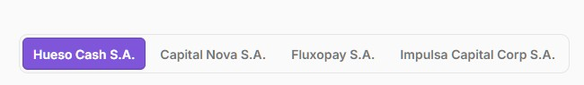
Que se esta viendo: saldos, ingresos, salidas, gastos, ganancias y totales operativos.
Para que sirve: ayuda a validar si la caja esta cuadrando antes de continuar o cerrar.
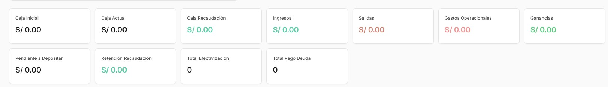
Mueve dinero desde la caja actual hacia otra empresa/cuenta destino.
Registra ingresos o salidas manuales con monto y concepto.
Crea una efectivizacion manual con codigo, DNI, monto y comunidad.
| Modal | Campo o boton | Que hace |
|---|---|---|
| Mover Saldo | Cuenta origen | Indica desde que cuenta saldra el dinero. |
| Mover Saldo | Empresa/Cuenta destino | Define a que empresa y cuenta llegara el saldo. |
| Mover Saldo | Guardar | Genera una salida en la caja origen y un ingreso en la caja destino. |
| Ingreso y Salidas | Ingreso | Registra dinero que entra a la caja por motivo manual. |
| Ingreso y Salidas | Salida | Registra dinero que sale de la caja por motivo manual. |
| Ingreso y Salidas | Concepto | Describe el motivo del movimiento para trazabilidad. |
| Operacion Efectivizacion | Codigo Operacion | Codigo bancario usado para identificar la operacion. |
| Operacion Efectivizacion | Guardar | Crea la operacion pendiente para atenderla desde el tab Efectivizacion. |
Que se esta viendo: empresa/cuenta origen, empresa/cuenta destino y monto a depositar.
Para que sirve: mueve saldo entre cajas, generando una salida en origen y un ingreso en destino.
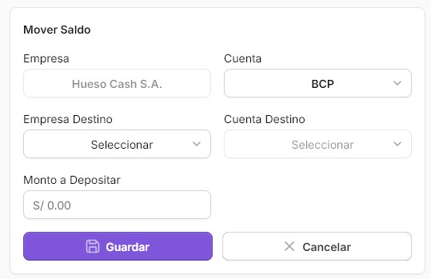
Que se esta viendo: seleccion de movimiento, monto y concepto.
Para que sirve: registra movimientos manuales de caja cuando no provienen de una operacion cargada.
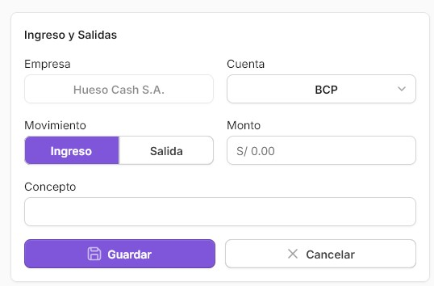
Que se esta viendo: registro manual de codigo, DNI, monto y comunidad.
Para que sirve: crea una operacion pendiente sin cargar archivo, para atenderla desde Efectivizacion.
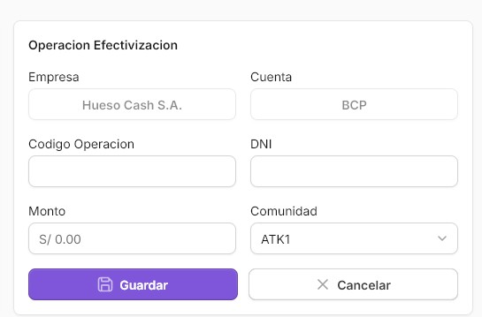
Arrastrar o seleccionar un archivo compatible: .xlsx, .xls, .html, .htm o .txt.
Confirmar nombre, peso, estado, filas detectadas y progreso.
Presionar Procesar y revisar procesados, omitidos y errores.
| Elemento | Que hace | Cuando usarlo |
|---|---|---|
| Zona de carga | Permite seleccionar o arrastrar el archivo descargado del banco. | Al iniciar la carga diaria de operaciones. |
| Procesar | Envia las filas detectadas al sistema para crear operaciones. | Cuando el archivo ya fue leido correctamente. |
| Cancelar | Limpia el archivo seleccionado y reinicia contadores. | Cuando se eligio un archivo incorrecto o se cambia de empresa. |
| Procesados | Muestra cuantas filas se cargaron correctamente. | Para validar el total creado en Efectivizacion. |
| Omitidos | Muestra filas que el sistema detecto como ya cargadas. | Para evitar duplicar operaciones ya trabajadas. |
| Errores | Muestra filas que no pudieron cargarse por datos incompletos o reglas faltantes. | Para revisar problemas del archivo o configuracion. |
Que se esta viendo: zona para seleccionar o arrastrar archivo, contadores en cero y botones bloqueados.
Para que sirve: indica que aun no hay archivo listo para procesar.
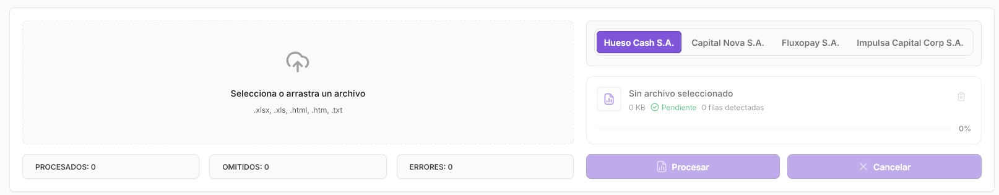
Que se esta viendo: nombre del archivo, peso, estado de lectura, progreso y filas detectadas.
Para que sirve: permite confirmar que el archivo correcto esta listo antes de procesar.
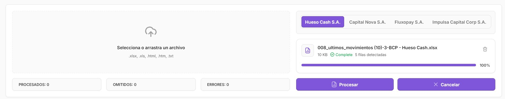
Que se esta viendo: total de filas procesadas, omitidas y con error.
Para que sirve: valida el resultado de la carga y ayuda a revisar duplicados o errores.
Seleccionar una o varias filas. Los botones se habilitan segun el estado de las operaciones seleccionadas.
| Boton | Que hace | Cambio esperado |
|---|---|---|
| Emp. Ingreso | Corrige la empresa/cuenta donde ingreso la operacion cargada. | Actualiza la operacion y sus movimientos de ingreso. |
| Emp. Salida | Cambia la empresa/cuenta desde donde se pagara al cliente. | Recalcula la salida y comisiones de transferencia. |
| Pagar | Marca operaciones pendientes como pagadas. | Pasa de Pendiente a Pagado y genera salida. |
| Derivar | Envia operaciones a otra ruta para que sean atendidas ahi. | La operacion sale de la bandeja actual y aparece en Derivados del destino. |
| Directo | Clasifica la operacion como ingreso directo a caja. | Pasa a Pagado sin generar salida normal al cliente. |
| Reiniciar | Regresa una operacion pagada a pendiente para corregirla. | Pasa de Pagado a Pendiente y ajusta movimientos/KPIs. |
Que se esta viendo: acciones masivas para cambiar empresa, pagar, derivar, marcar directo o reiniciar.
Para que sirve: permite atender varias operaciones seleccionadas sin trabajar una por una.
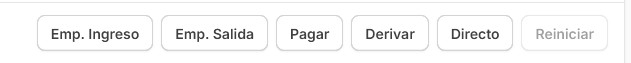
En este tab se revisan operaciones cargadas por archivo o registradas manualmente.
La tabla muestra facturacion, codigo, DNI, comunidad, cuentas, monto, comision, transferencia, estado, hora y acciones.
| Filtro o columna | Que hace | Uso recomendado |
|---|---|---|
| Todos | Muestra operaciones pendientes, rechazadas y pagadas segun la empresa seleccionada. | Para revisar el panorama completo del dia. |
| Pendientes | Muestra operaciones que aun falta atender. | Para continuar el trabajo operativo. |
| Rechazados | Muestra operaciones observadas o no aceptadas. | Para revisar casos que requieren correccion. |
| Pagados | Muestra operaciones ya atendidas. | Para confirmar lo trabajado. |
| Cod. Operacion | Busca por codigo de operacion del banco. | Cuando el cliente brinda el codigo o se compara contra el archivo. |
| DNI | Busca por documento del cliente. | Cuando se atiende una consulta puntual. |
| Estado | Permite ver si la operacion esta pendiente o pagada. | Click en Pendiente para accion rapida de pago cuando aplique. |
| PD | Busca coincidencia para enlazar devolucion de Pago Deuda. | Solo usar cuando la operacion corresponde a devolucion de Pago Deuda. |
| Acciones | Abre opciones por fila como comision especial, extra, directo y visualizar. | Para ajustes puntuales sin seleccionar varias filas. |
Que se esta viendo: detalle de operaciones con facturacion, codigo, DNI, comunidad, cuentas, monto, comision, transferencia y estado.
Para que sirve: permite revisar que datos se pagaran y ejecutar acciones segun el estado de cada fila.
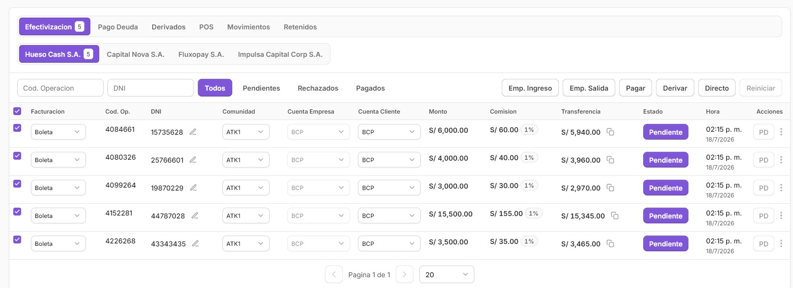
Que se esta viendo: menu de opciones por fila ubicado al extremo derecho de la tabla.
Para que sirve: permite aplicar ajustes puntuales a una sola operacion sin seleccionar varias filas.
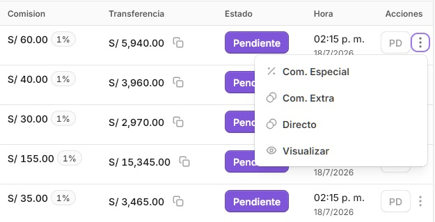
Que se esta viendo: accion de Pago Deuda dentro de una fila de Efectivizacion.
Para que sirve: busca coincidencias para enlazar una devolucion de Pago Deuda con su solicitud original.
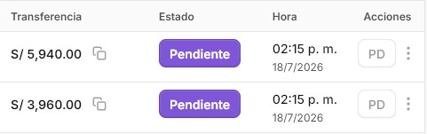
Este tab permite revisar solicitudes de Pago Deuda asignadas a BCP.
La transferencia se confirma desde BCP. La devolucion se enlaza desde Efectivizacion usando el boton PD.
| Boton o estado | Que hace | Cambio esperado |
|---|---|---|
| Emp. Salida | Cambia la empresa/cuenta desde donde se transferira al cliente. | Actualiza la cuenta de salida antes de transferir. |
| Solicitado | Estado inicial de la solicitud. | Al confirmar transferencia pasa al paso 2. |
| Transferencia | Confirma que el banco ya transfirio al cliente. | Pasa de Solicitado a Transferido. |
| Transferido | Indica que el cliente ya recibio el dinero. | Espera devolucion enlazada desde Efectivizacion. |
| Devuelto | Indica que ya se encontro la devolucion. | Queda listo para finalizacion por Atencion. |
| Reiniciar | Vuelve una transferencia al paso inicial si hubo error. | Pasa del paso 2 al paso 1. |
Que se esta viendo: solicitudes con pasos, codigo, DNI, empresa de salida, cuenta, monto transferido, empresa de ingreso y monto devuelto.
Para que sirve: permite confirmar transferencia, revisar devolucion enlazada y controlar el avance hasta finalizado.
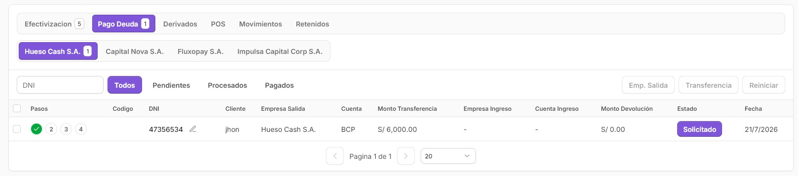
La ruta /operaciones/pagodeuda es la bandeja central donde Atencion revisa y completa las solicitudes de Pago Deuda.
Que se esta viendo: tabla general de solicitudes con pasos, DNI, cliente, banco, monto solicitado, comision, empresa, cuenta, estado y fecha.
Para que sirve: permite que Atencion controle el ciclo completo de Pago Deuda sin entrar banco por banco.
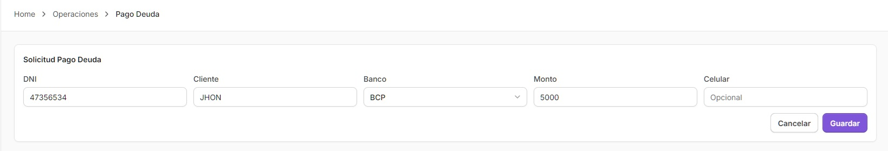
Que se esta viendo: columnas Empresa y Cuenta dentro de la solicitud.
Para que sirve: define donde se registrara el ingreso separado de la comision de Pago Deuda.
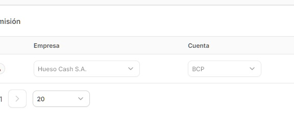
Que se esta viendo: accion de confirmacion cuando la solicitud ya esta en estado Devuelto.
Para que sirve: cierra el ciclo administrativo y deja la solicitud como Finalizado.
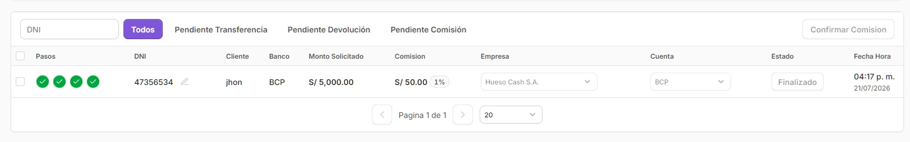
/operaciones/pagodeuda permite completar y auditar el cierre final de Atencion.Derivados: operaciones enviadas desde otra ruta para ser atendidas en BCP.
POS: solicitudes POS asignadas a BCP cuando existan.
| Bandeja | Boton | Que hace |
|---|---|---|
| Derivados | Emp. Salida | Cambia la empresa/cuenta desde donde saldra el pago. |
| Derivados | Pagar | Atiende la operacion derivada y genera salida. |
| Derivados | Derivar | Reenvia la operacion a otra ruta si no corresponde a BCP. |
| Derivados | Reiniciar | Regresa una operacion pagada a pendiente para correccion. |
| POS | Pagar | Marca la solicitud POS como atendida. |
| POS | Derivar | Envia la solicitud a otra ruta si corresponde. |
Que se esta viendo: operaciones enviadas desde otra ruta para que BCP las atienda.
Para que sirve: permite pagar, cambiar empresa de salida, derivar nuevamente o reiniciar una operacion derivada.
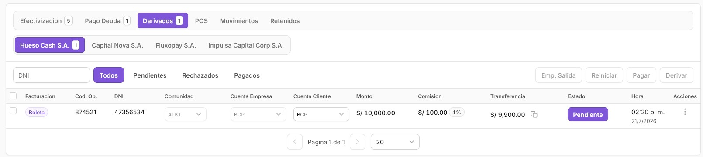
Que se esta viendo: operaciones POS asignadas a la ruta BCP.
Para que sirve: permite atender solicitudes POS o derivarlas si corresponde otra ruta.

Permite consultar ingresos y salidas generados por las operaciones de la empresa seleccionada.
| Filtro o columna | Que muestra | Para que sirve |
|---|---|---|
| Todos | Todos los movimientos visibles de la empresa. | Revision general de caja. |
| Efectivizacion | Movimientos generados por operaciones de efectivizacion. | Validar ingresos/salidas operativas. |
| Pago Deuda | Movimientos del flujo Pago Deuda. | Validar depositos, devoluciones o comisiones cuando aplique. |
| Otros | Movimientos manuales como ingresos, salidas o transferencias internas. | Auditar acciones registradas por modal. |
| Ingreso | Dinero que entra a la caja. | Confirmar recaudacion efectiva. |
| Salida | Dinero que sale de la caja. | Confirmar pagos realizados. |
Que se esta viendo: libro de caja con origen, tipo de movimiento, DNI, empresa, ingreso, salida y fecha.
Para que sirve: permite auditar lo que realmente impacto caja antes de cerrar o descargar reporte.
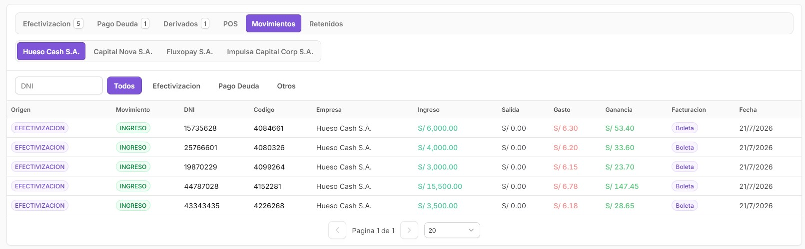
Antes de cerrar, revisar KPIs, movimientos del dia, operaciones pendientes y saldo esperado.
Al presionar Cierre, el sistema congela movimientos y resultados del periodo.
| Accion | Que hace | Importante |
|---|---|---|
| Revisar KPIs | Permite comparar caja inicial, caja actual, ingresos y salidas. | Debe cuadrar con el banco y la caja operativa. |
| Revisar Movimientos | Permite validar el detalle que se cerrara. | Conviene revisar antes de confirmar cierre. |
| Cierre | Congela el periodo operativo de la empresa seleccionada. | Despues se consulta desde historial. |
Que se esta viendo: boton de cierre y datos del periodo que se congelara.
Para que sirve: cierra el ciclo operativo de la empresa seleccionada y guarda el resultado historico.
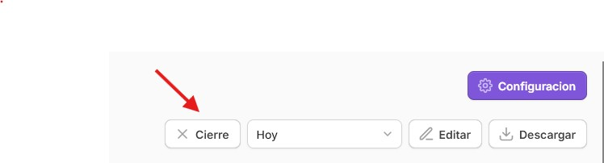
Seleccionar Hoy o una fecha historica y presionar Descargar.
El reporte permite revisar empresa, banco, KPIs, efectivizaciones, Pago Deuda y movimientos.
| Opcion | Que hace | Uso recomendado |
|---|---|---|
| Hoy | Descarga el reporte del ciclo abierto actual. | Para revisar lo trabajado antes de cierre. |
| Fecha historica | Descarga informacion de un cierre anterior. | Para auditoria o conciliacion. |
| Presenta resumen y detalle en formato visual. | Para compartir o imprimir. | |
| Excel | Entrega hojas con detalle operativo. | Para analisis o validacion externa. |
Que se esta viendo: selector de fecha y boton para descargar el reporte.
Para que sirve: genera documentos de revision del dia actual o de cierres historicos.
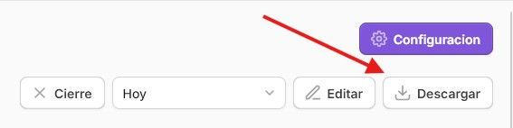